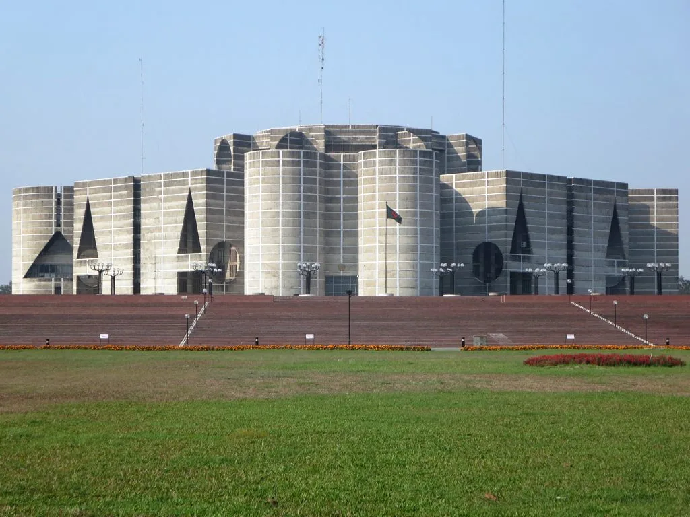

정점식 "김현지·정진상 인사농단 의혹, 국감 1순위로 검증"
국민의힘 정점식 원내대표가 2일 김현지 대통령실 제1부속실장과 정진상 전 더불어민주당 정무조정실장을 둘러싼 인사농단·국정개입 의혹 규명을 올해 정기국회 국정감사의 1순위 과제로 제시했다. 정 원내대표는 이재명 대통령의 측근으로 꼽히는 두 사람이 공식 직책과 무관하게 정부 인사와 국정 운영 전반에 영향력을 행사하고 있다는 의혹을 이번 국감에서 집중적으로 검증하겠다고 밝혔다. 이번 정기국회 국정감사가 신임 장관 후보자들에 대한 인사청문 일정과 맞물려 있는 만큼, 야당은 개각 국면에서부터 누적된 인사 라인 책임론을 국감 초반 최대 쟁점으로 끌고 가겠다는 전략으로 읽힌다.
이른바 '성남 라인' 책임론은 최근 정부 출범 이후 잇따른 장관 후보자 낙마와 개각 혼선을 계기로 본격화됐다. 야권에서는 정진상 전 실장과 김현지 실장, 김용 전 민주연구원 부원장 등을 핵심축으로 거론하며, 공식 직책이 없는 정진상 전 실장이 인사와 정책 결정에 실질적인 영향력을 행사하고 있다는 의혹을 제기해왔다. 야당은 이재명 정권의 내부 역학 관계를 김현지·정진상 양대 축으로 봐야 한다는 주장을 펴며, 대장동 관련 사법리스크가 해소되지 않은 정진상 전 실장이 전면에 나서기 어려운 상황에서 실무 인사를 김현지 실장이 총괄하고 있다는 의혹도 함께 제기하고 있다.
정 원내대표는 "공식 직책이 없는 야인인 정진상이 세간의 소문대로 인사와 국정을 주무르고 있다면 대단히 심각한 국정농단"이라며 반드시 진실을 밝혀내겠다고 말했다. 국민의힘은 두 사람을 국정감사 증인으로 채택해 직접 출석시켜 의혹을 검증하겠다는 방침을 세운 것으로 전해졌으며, 관련 상임위원회 차원에서 증인 채택 요구서를 제출하는 절차도 함께 추진하고 있는 것으로 알려졌다.

이에 대해 김현지 실장 측은 그동안 언론 인터뷰 등을 통해 "감출 것은 없다"며 의혹을 둘러싼 논란이 정치권의 "긁어 부스럼"이라는 취지로 반박해왔다. 여권 일각에서도 인사 실패의 책임을 특정 개인에게 돌리기보다 시스템 전반의 문제로 접근해야 한다는 반론이 나온다. 청와대 측도 공식 라인이 아닌 참모가 인사에 개입했다는 의혹 자체가 사실과 다르다는 입장을 견지하고 있어, 양측의 진실 공방은 국정감사 현장에서도 쉽게 좁혀지지 않을 것으로 보인다.
여당인 더불어민주당은 야당의 증인 채택 추진에 강하게 반발할 것으로 예상된다. 민주당은 그동안 해당 의혹 제기를 근거 없는 정치공세로 규정하며 정면 대응해왔던 터라, 실제 국정감사에서 증인 채택이 이뤄질지는 여야 간 협상 과정에서 상당한 진통이 예상된다. 여당 내에서는 야당이 구체적 물증 없이 인사농단이라는 표현을 쓰는 것 자체가 과도하다는 비판도 나오는 반면, 일부 의원은 국민적 의혹이 커진 만큼 투명한 설명이 필요하다는 신중한 목소리도 내고 있다.

올해 정기국회 국정감사는 신임 장관 인사청문 정국과 겹쳐 있어 여야 간 공방이 한층 가열될 조짐을 보이고 있다. 야당은 인사농단 의혹뿐 아니라 개각 과정에서 드러난 인사 검증 시스템의 문제점도 함께 짚겠다는 입장이어서, 관련 쟁점이 국감 초반 정국의 최대 변수로 떠오를 가능성이 크다. 여야가 이 문제를 놓고 정면으로 충돌할 경우 예산안 심사 등 다른 국회 일정에도 영향을 줄 수 있다는 우려도 정치권 안팎에서 제기된다.
결국 이번 논란의 핵심은 비선출직 인사가 정부 운영에 미치는 영향력의 실체를 어디까지 규명할 수 있느냐에 있다. 증인 출석이 실제로 이뤄지더라도 의혹의 사실관계를 명확히 가려내기까지는 상당한 시간이 걸릴 것으로 보이며, 국정감사가 본격화되는 이달 중순 이후 공방의 강도가 더욱 거세질 전망이다.